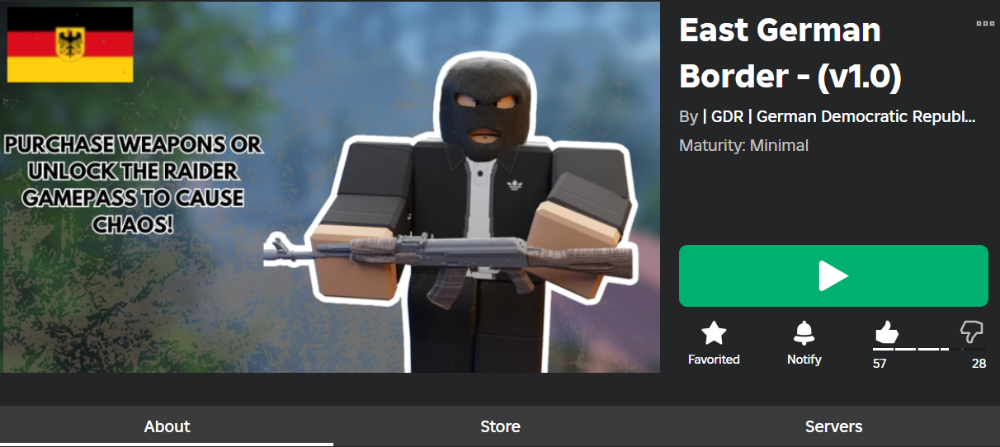

My Work
'East German Border' - ROBLOX Experience
East German Border is a project that I spent 8 months developing, the coding aspect of the game contains over 200 code 'scripts', the vast majority of those were written by hand, by me. Every aspect of the game, aside from a couple of scripts that were commissioned by me from other developers, I created from scratch. I taught myself all of the skills needed for this (Lua Coding, Game Design, Graphics/UI Design etc.), and I continue to use those skills today in other projects and updates for 'East German Border'. 'East German Border' is a ROBLOX experience that portrays the division between East and West germany as it were in the 1980's, with the option to play as a soldier, politician and more.
 This does not reflect my political affiliation, and is simply a simulation game of a time period I am interested in. East German Border ROBLOX pageBlender Modelling
I have experience with 3D Modelling in Blender, I taught myself this skill as it was crucial to development of my ROBLOX game, and it can be useful in all areas of digital development. All images below except the porsche were both created from scratch and rendered by me.
 The porsche model is open-sourced. However, it was rendered and had its lighting setup by me.
The porsche model is open-sourced. However, it was rendered and had its lighting setup by me.
COMMUNITY MANAGEMENT
Throughout my time in game development, I've also realised that managing the community properly around your game is just as crucial. I've had many years of community management, taking administrative roles in communities for other games that I have helped to develop, as well as obviously managing the community of my own game. This means I have experience with things like creating documentation, spreadsheets, planners/organisers and marketing, which are all crucial to running a community effectively and smoothly.